Inzai, Chiba: things to do, food and stays
Inzai · Chiba
Inzai
Highlighted on the Chiba map.
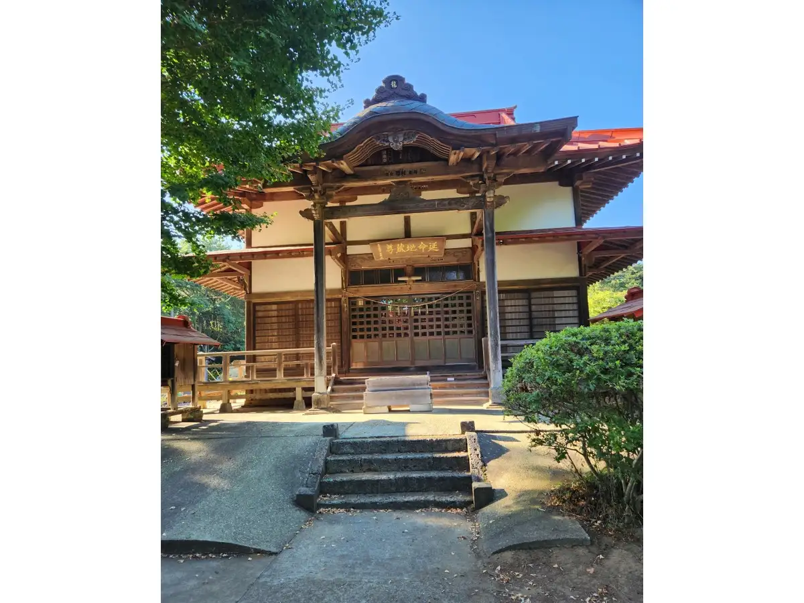
Stay
Graces Hotels グレースホテルズ
Graces Hotels Guresu Hotels
Hotel in Hara, Inzai; 1-minute drive from Inzaimakinohara Station.
ホテルマークワンＣＮＴ
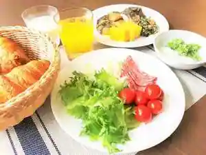
Hotel Makuwan CNT
Hotel at Jinko Onsen in Chuominami, Inzai with a large communal bath; 3-minute walk from Eki)Chibanyutaunchuo Station.
東横ＩＮＮ印旛日本医大駅前
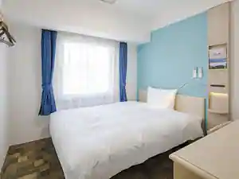
Toyoko INN Inba Nippon Idai Ekimae
Inn in Maihime, Inzai with breakfast available.
Dining
家系ラーメン 王道家直系 修
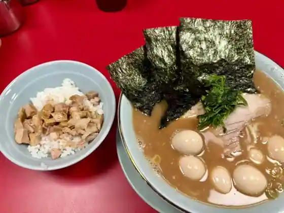
Kakei Ramen Odo Ie Chokkei Osamu
いんば学舎 オソロク倶楽部
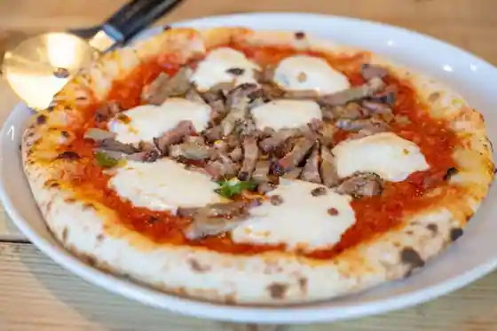
Inba Gakusha Osoroku Kurabu
中華そば富士鹿
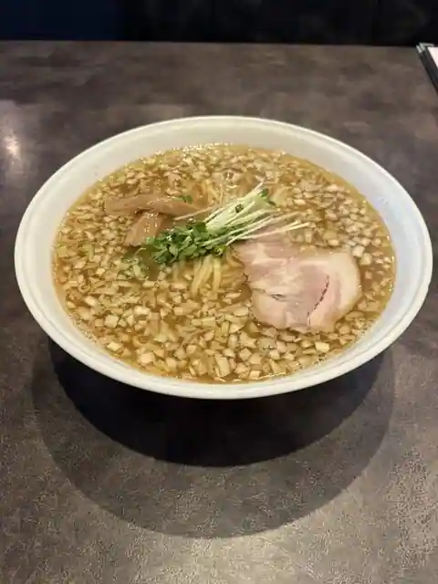
Chuka Soba Fuji Shika
鈴や
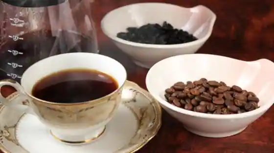
Suzu Ya
まるみや
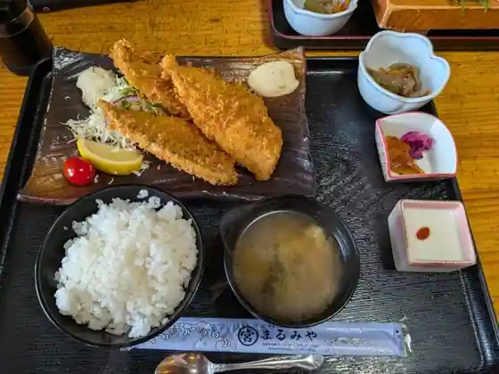
Marumiya
茅橋らーめん
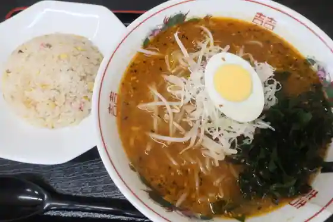
Me Hashi Ramen
らぁ麺 富士虎屋 千葉ニュータウン店
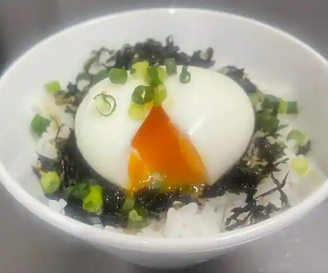
Ra Men Fuji Tora Ya Chiba Nyutaun
ロピア ザ ビフテキ 印西BIGHOP店
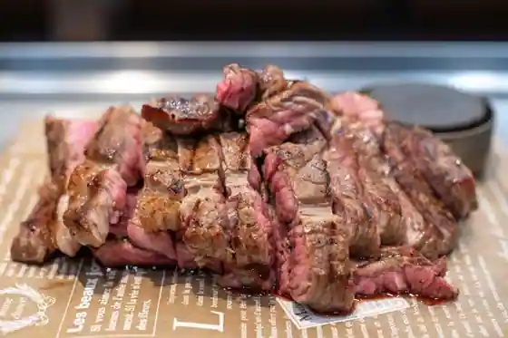
Ropia Za Bifuteki Inzai BIGHOP
ふくね
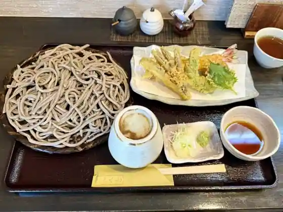
Fukune
とん吉
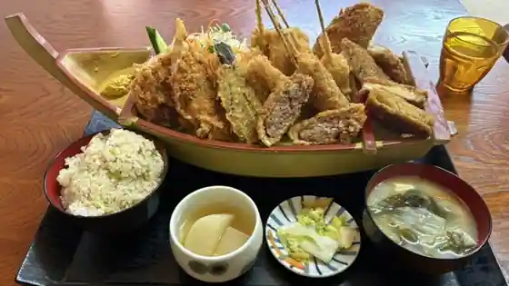
Ton Kichi
高橋食堂
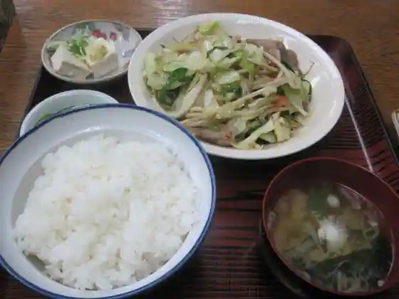
Takahashi Shokudo
居方食堂
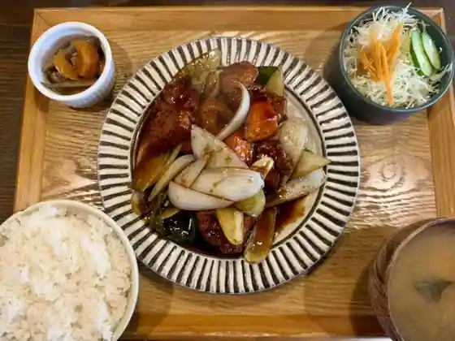
Kyo Ho Shokudo
回転寿し 活鮮 船尾店
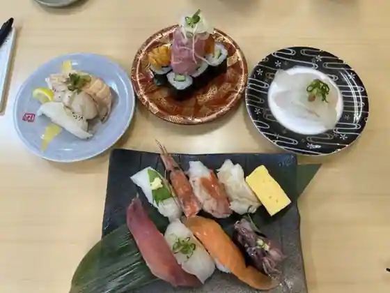
Kaiten Hisashi Shi Katsu Sen Senbi
篭の鳥
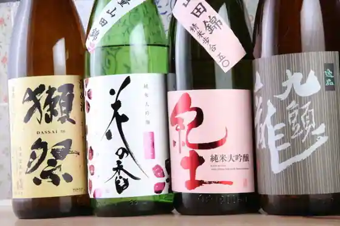
Kago No Tori
NOIE
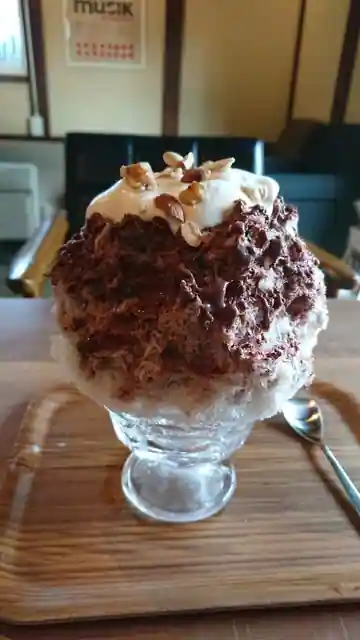
NOIE
嶺久庵 印西店
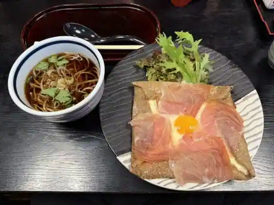
Mine Kyu Iori Inzai
洋風食堂リベルタ
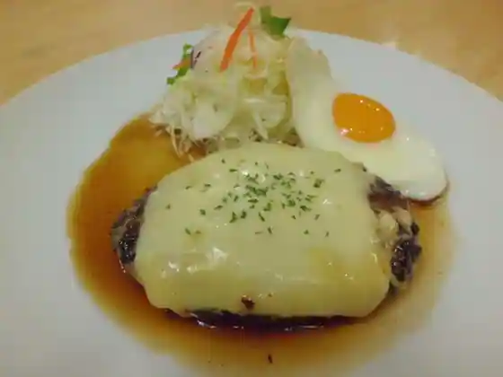
Yofu Shokudo Riberuta
豚ラボ
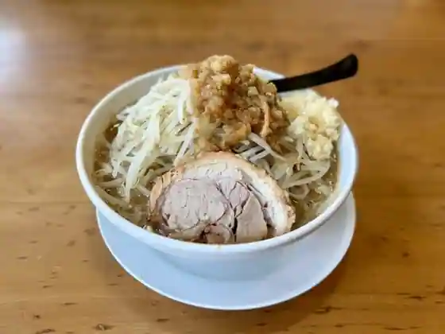
Buta Rabo
インダスレイ
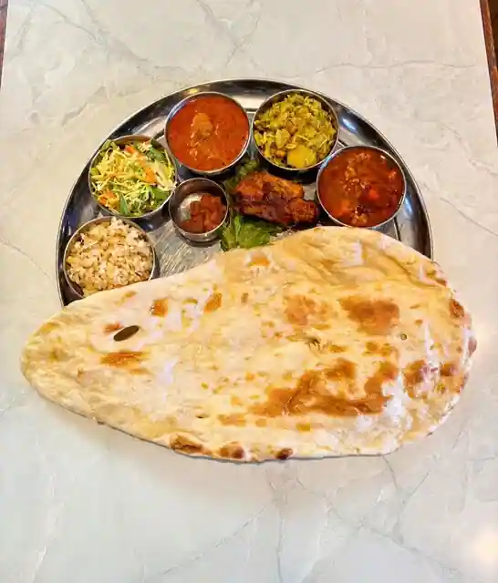
Indasurei
海鮮和食 魚まみれ 仲々 小林店
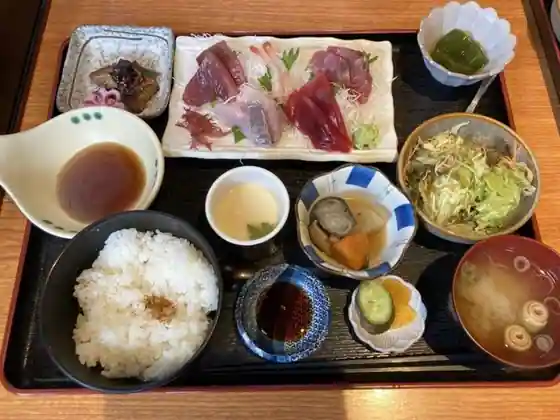
Kaisen Washoku Sakana Mamire Nakanaka Kobayashi
台湾料理 師記
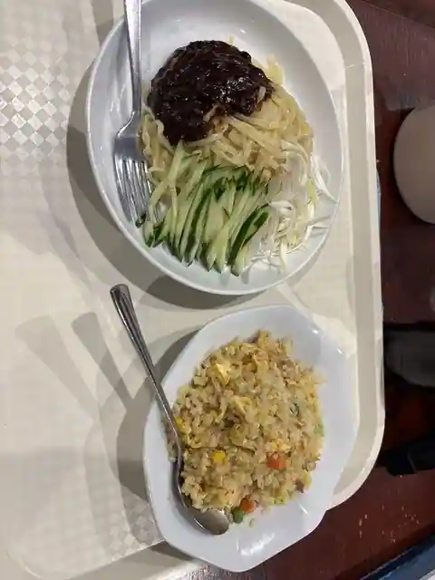
Taiwan Ryori Shi Ki
そばよし 順天堂大学前店
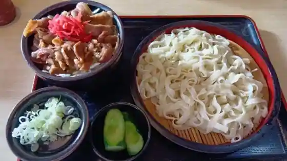
Sobayoshi Juntendodaigaku Mae
ベーカリー コルネット
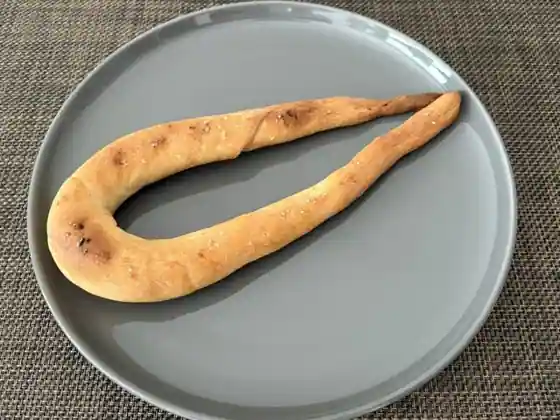
Bakery Korunetto
イタリアンダイニング MAO
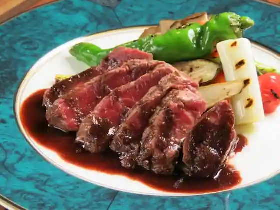
Itarian Dining MAO
Sights
Ryu Hara Tera
Prefectural Imbanuma Park
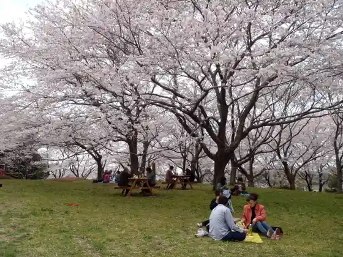
Hokuso Hana no Oka Park
Kusa Shin Forest (Sofuke no Mori)
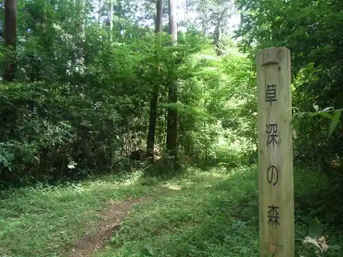
Nosambutsu Chokubai Tokoro Yaoyasan Kusa Shin Mise
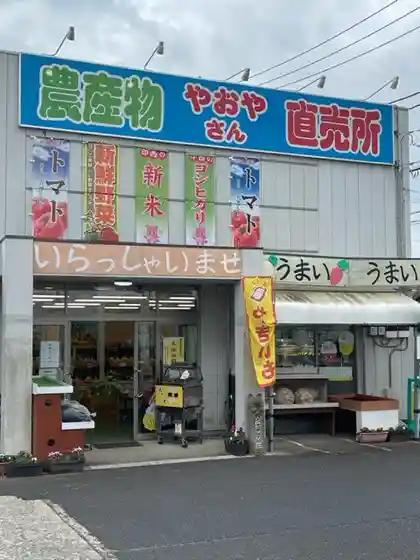
Kisetsu no Hana (Yoshitaka no Dai Sakura) / Yoshitaka no Dai Sakura
Toretate Sanchoku Kan Inzai Mise
Michiyo Dezainsutajio
Kinoshita Koryu no Mori Rekishi Shiryo Center
Wada Farm